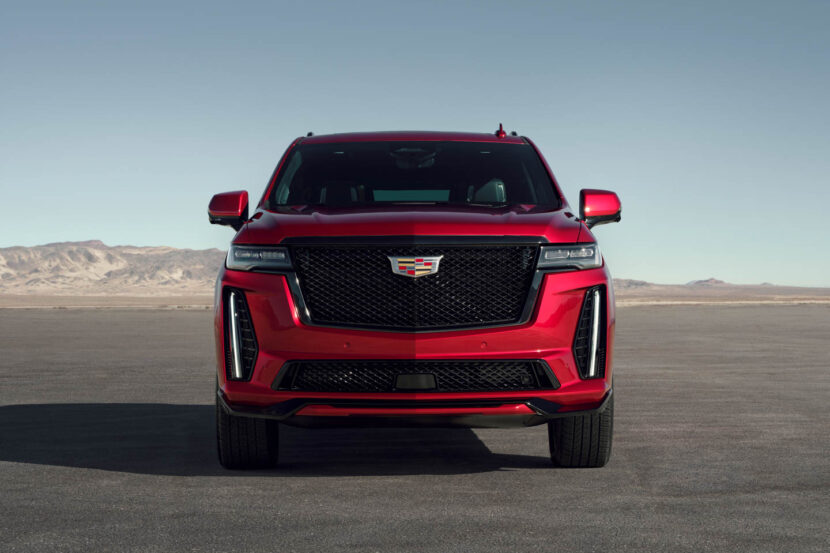

For decades, the Cadillac Escalade has been the favorite luxury SUV of Americans.
It’s so popular that, despite its supremely high price tag and pandemic economy,
Escalade sales went up 120 percent in 2021. However, even though it’s always used a massive V8 engine,
it’s never exactly been a performance SUV that could compete with something like the BMW X7 M50i. Until now,
though, as the all-new Cadillac Escalade V is here and it’s… interesting.
While the new Cadillac Escalade V isn’t called a “Blackwing”, like its CT5-V sibling, it does have the same engine
— a 6.2 liter supercharged “LT4” V8. It also pumps out the exact same 668 horsepower and 659 lb-ft of torque, dwarfing the
X7 M50i’s 523 horsepower and 553 lb-ft.As of right now, that’s all the information Cadillac has released.
More details will come with its full reveal sometime in Spring 2022. However, there are some easy assumptions
we can make. Much like every high-performance Caddy, the Escalade V will likely come with some version of the brand’s
magnetic ride control dampers, which typically work brilliantly. So it will likely ride and handle well for a big SUV.
It will also almost certainly come with massive Brembo brakes, as all Cadillac V models do.
But will it be a proper BMW X7
M50i competitor? It’s likely going to be priced similarly, as the current Escalade starts at around $72,000, which is close to the
$74,900 starting price of the X7. A fully-loaded Escalade will tip into the six-figure range. So the Escalade V will likely start
at around the same $100,000 starting price as the BMW X7 M50i ($99,800).
Does that mean it will handle and drive as well or
be as premium inside? That’s yet to be seen. We haven’t tested the new Escalade just yet, so we can’t speak to its interior
quality versus the X7’s, nor can we compare its handling and dynamics. However, the Escalade is so heavy it makes the X7 seem light.
The Bimmer checks in at around 5,700 lbs, which is admittedly immense, but the Caddy tips the scales at over 6,000 lbs. I don’t care
how clever its suspension is, three tons is three tons.The Escalade is also longer, wider, and taller and yet has a shorter wheelbase.
So it’s not set up to be a sporty SUV. Neither is the X7, though, and the M50i version is surprisingly capable. So maybe Cadillac
can work its magic on the Escalade V, just like BMW did with the X7 M50i.
Will the Cadillac Escalade V actually take on the BMW X7 M50i? Crazier things have happened.
One thing’s for sure, it will be fun to find out.